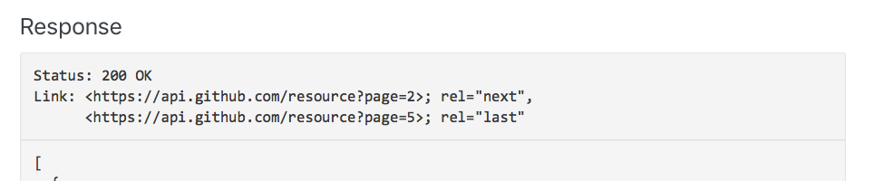
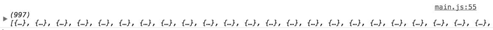

When you request for a list of items, many APIs respond with an incomplete list. For example, GitHub sends you 30 repositories even if the user has more than 30 repositories.
If you want to fetch all repositories, you can do two things:
Increase the number of items per request
Make more requests
Increasing the number of items per request
APIs may let you change the number of items you get per request. For example, GitHub lets you get up to 100 items. To get 100 items, you change the per_page query parameter.
If the user has more than 100 repositories, GitHub will send you the first 100 repositories. If the user has less than 100 repositories, GitHub will send you every repository.
For this lesson, we’re going to fetch Sindre Sorhus’s repositories. Sindre creates a lot of open source projects and has over 900 repositories on GitHub.
APIs will tell you how to make more requests. This is usually found in the Pagination section of the API. Make sure to read it.
How you make more requests depends on the first response.
If your first response tells you the total number of pages, you can fetch the rest of the information at once. If the response doesn’t tell you the total number of pages, you need to fetch page by page.
You’ll learn how to fetch many pages at once in this lesson, and how to fetch page by page in the next lesson.
Fetching many pages at once
Many APIs use a Link header to tell you the number of pages. GitHub is one example.

When you get a paginated response from GitHub, you’ll see the Link header in your dev tools.
partToBeReplaced is the character(s) you want to replace.
replacer is the characters you want to replace with.
Here’s an example:
const string = 'My name is Zell'
const replaced = string.replace('Zell', 'Vincy')
console.log(replaced) // My name is Vincy
Formatting the first part
We’ll use an empty string as the replacer to remove the angled brackets. After we remove the angled brackets, we also want to use trim to remove any leading and trailing spaces.
The process to parse and format the second part is the same as the process to parse and format the first part. I’ve created a function for you to speed things up.
We need to use Promise.all to fetch many requests at once. Since we know the last page is ten, we need to construct a Promise.all that looks like this:
This gives us an array of repositories from Page 2 to the last page. We can include repositories from the first page if we set the first page as the initial value.

We can flatten the responses to get an array of repositories
The code
Here’s the code to execute everything we talked about.
const link = 'https://api.github.com/users/sindresorhus/repos?per_page=100'
fetch(link)
// Pass headers and body into the next then call
.then(r => {
const headers = Array.from(r.headers.entries())
.reduce((accumulator, [header, value]) => {
return Object.assign(accumulator, {
[header]: value
})
}, {})
return r.json()
.then(body => ({ headers, body }))
})
.then(res => {
// Parse link headers
const parsed = parseLinkHeader(res.headers.link)
// Gets last page
const queryString = parsed.last.split('?')[1]
const searchParams = new URLSearchParams(queryString)
const lastPage = searchParams.get('page')
// Make array of promises
let promises = []
for (let index = 2; index <= lastPage; index++) {
const request = fetch(`${link}&page=${index}`)
.then(r => r.json())
promises = promises.concat(request)
}
// Fetches all pages and flattens the results
return Promise.all(promises)
.then(results => {
return results.reduce(
(acc, result) => [...acc, ...result], res.body
)
})
})
.then(repos => {
console.log(repos)
})
An alternate way to make the array of promises
We can make the array of promises with Array.from. To do so, we pass an object with a length property. Array.from will treat this object as an array-like object. It will create array items and fill them with undefined.